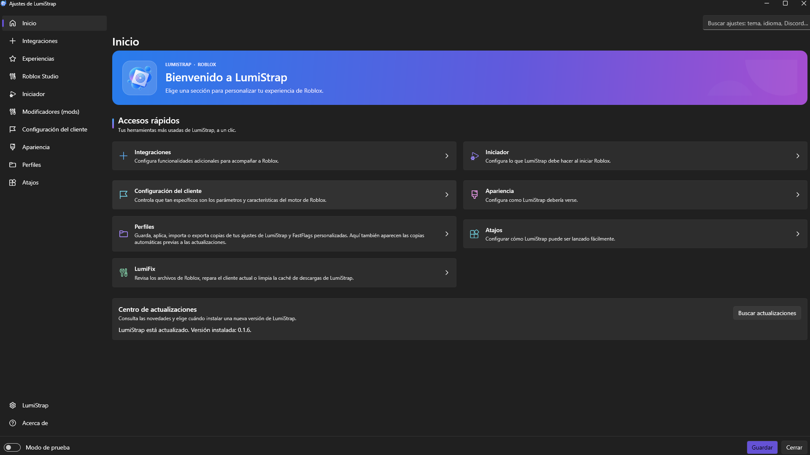
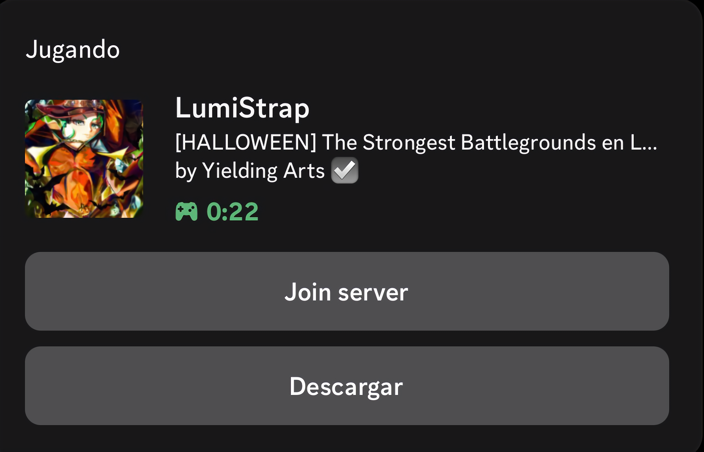

Centro de actualizaciones
Consulta una versión nueva y sus cambios. Tú decides cuándo instalarla.
LumiStrap reúne instalación, ajustes y herramientas útiles en una experiencia clara para Windows. Tú eliges qué cambiar y cuándo.

Consulta una versión nueva y sus cambios. Tú decides cuándo instalarla.
Elige paletas Aurora, Lumen, Ocean, Sakura o Mint; cambia entre modo claro y oscuro, ajusta colores e importa o exporta archivos .lumitheme.
Analiza procesador, memoria y gráficos en tu equipo. Revisa la recomendación y sus cambios antes de aplicarla.
Presencia personalizada de Discord para mostrar a los demás qué juegos estás jugando. También es compatible con BloxstrapRPC. (obvio.)

| Herramienta | Para qué sirve |
|---|---|
| Perfiles gráficos | Elige Rendimiento, Equilibrio o Calidad y personaliza los ajustes del cliente. Los cambios manuales aparecen como Personalizado. |
| Asistente gráfico | Detecta localmente el procesador, la memoria y los gráficos; muestra una recomendación de Rendimiento, Equilibrio o Calidad para que la revises antes de aplicarla. |
| Temas Lumi | Elige paletas incluidas, cambia entre modo claro y oscuro, personaliza los colores e importa o exporta archivos .lumitheme. |
| Roblox Studio y FastFlags | Gestiona los ajustes de Studio, las opciones globales y las FastFlags. Roblox decide qué indicadores permite y puede cambiar su comportamiento. |
| Experiencias | Añade lugares con un enlace de Roblox o un ID de lugar, guarda favoritos y consulta juegos recientes. Los juegos recientes pueden agregarse automáticamente si activas el seguimiento de actividad. |
| LumiFix | Revisa procesos y archivos de Roblox antes de iniciar, comprueba la instalación, repara archivos del cliente o borra la caché de descargas. La comprobación previa no cierra programas ni modifica archivos. |
| Perfiles e historial | Guarda, aplica, importa y exporta ajustes. LumiStrap conserva hasta 20 copias recientes que puedes restaurar. Los perfiles contienen solo la configuración. |
| Panel de sesión | Consulta la información disponible de la experiencia y del servidor, con acceso rápido a las herramientas de LumiStrap mientras juegas. |
| Privacidad de Discord | Oculta temporalmente la actividad de Roblox y los botones para unirse; al desactivar el modo de privacidad, se restauran las opciones anteriores. |
| Descargas y errores | Sigue el progreso y la velocidad de las descargas, vuelve a intentarlas o cancélalas y consulta explicaciones más claras de problemas comunes. |
| Centro de actualizaciones | Busca nuevas versiones de LumiStrap, revisa sus cambios y decide cuándo instalarlas. |
El instalador oficial es un único archivo y se abre directamente al ejecutarlo.
Abre la última versión y descarga LumiStrap.exe.
Se inicia el instalador de LumiStrap directamente; no hay un menú adicional para elegir otro instalador.
Sigue las indicaciones. Después, abre Roblox normalmente para que LumiStrap gestione el inicio.
Cierra Roblox y cualquier proceso duplicado de LumiStrap desde el Administrador de tareas, vuelve a abrir el instalador y, si sigue fallando, usa LumiFix para revisar o reparar el cliente. También puedes enviar los registros para pedir ayuda.
Antes de instalar una versión nueva, LumiStrap te muestra qué incluye y guarda una copia de tus ajustes para que puedas volver a ellos.
La versión y sus cambios se consultan directamente desde el último lanzamiento de LumiStrap en GitHub.
Cargando las novedades…
Cargando versiones…
Encuentra una respuesta, consulta las instrucciones o comparte un problema con el proyecto.
Respuestas sobre perfiles, FastFlags, instalación y LumiFix.
Ver respuestasRevisa la guía del proyecto, sus funciones y cómo compilarlo.
Abrir guía en GitHubDescribe qué ocurrió y adjunta los registros de diagnóstico exportados desde LumiStrap.
Contactar en GitHubLo esencial sobre LumiStrap, la instalación y sus ajustes.
Es un fork comunitario independiente de Bloxstrap para Windows. No está afiliado a Roblox Corporation.
Descarga el único archivo LumiStrap.exe desde la página de versiones y ejecútalo. Se abrirá directamente el instalador.
Guarda tus ajustes de LumiStrap y FastFlags personalizadas. No incluye archivos de Roblox ni modificaciones; puedes importar y exportar perfiles.
No necesariamente. Roblox solo aplica las flags incluidas en su lista permitida, y puede cambiar su disponibilidad o comportamiento con una actualización.
Puede revisar la instalación de Roblox, reparar archivos del cliente o limpiar la caché de descargas. LumiStrap explica la acción antes de que confirmes.
LumiStrap es un fork comunitario independiente de Bloxstrap. Conserva su licencia MIT y desarrolla su propia identidad y herramientas.

Descarga el instalador más reciente desde GitHub Releases para Windows.
Ir a la descarga